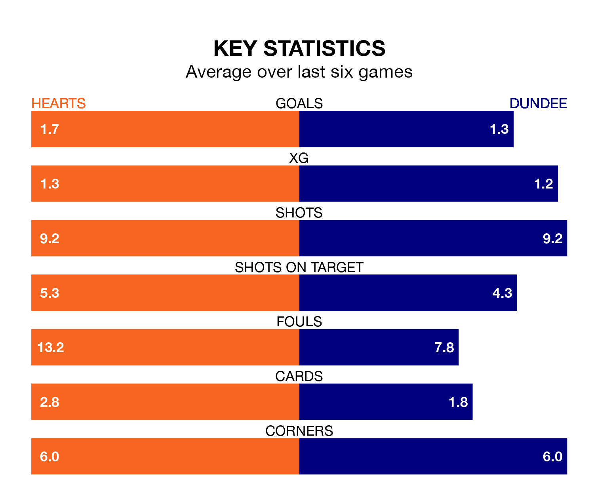

Hearts face Dundee on Tuesday seeking to protect their long unbeaten run in Premiership.
Hearts are unbeaten in five, with four wins and one draw, ahead of the 7.45pm kick-off.
They face a Dundee team who have won one and drawn two over the same number of games.
In Lawrence Shankland, Hearts have the league's sharpest shooter so far this season. He has notched 13 goals in 21 appearances.
Dundee's top scorers, with four goals in 18 games each, are Amadou Bakayoko and Joe Shaughnessy.
In the last 10 years, Hearts and Dundee have played each other on 19 occasions. Hearts won 10 of them, Dundee six, and they drew three times.
On average, Hearts scored 1.6 goals and the Dees 1.1 in those matches.
Their last meeting was on August 27, when Dundee won 1-0 at home.
With 24 goals in 21 games so far this season, the home team are scoring at below the league average rate with 1.1 goals per game. But they are conceding fewer than average too, letting in 18 goals at a rate of 0.9 per game.
The Dees, meanwhile, are average scorers, with 1.2 goals per game. They have conceded 1.6 goals per game.
Hearts are third in the table after 21 games, of which they have won 11 and drawn three, earning 36 points.
The visitors are four places behind Hearts in seventh, with five wins and seven draws putting them on 22 points.
Hearts's last match was on January 2, a 2-1 win against Livingston, with Kenneth Vargas and Shankland getting the goals for Hearts.
Dundee drew 2-2 with Kilmarnock last time out, on December 30, with Luke McCowan and Shaughnessy on the scoresheet.
Updated: 10:02 (UTC), 19/01/24